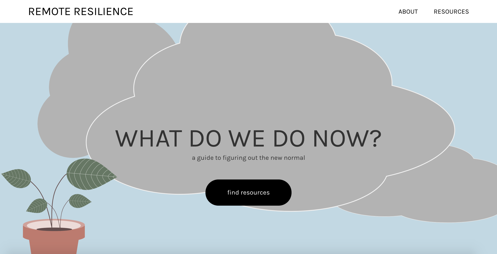
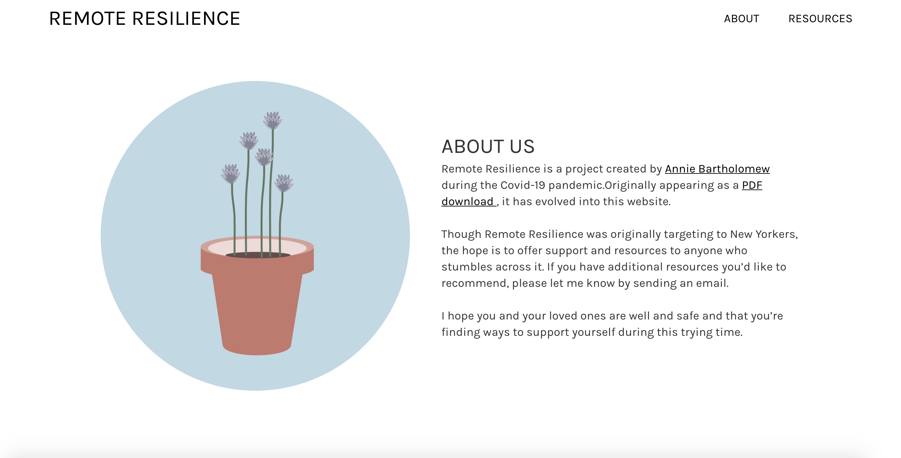
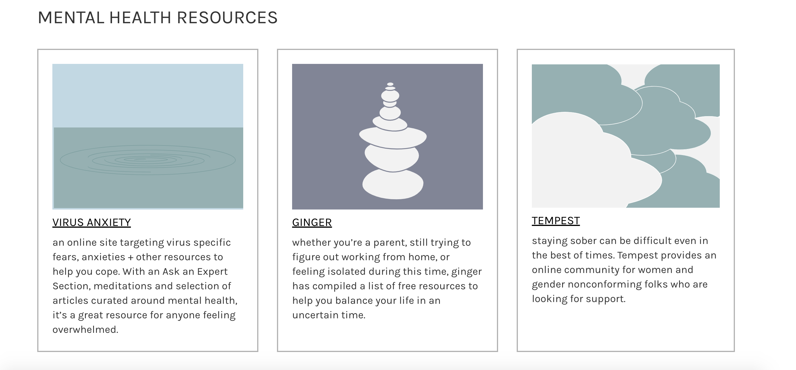

remote resilience
2020
Remote Resilience is an online resource for individuals to find support, resources and fun distractions during the Covid-19 crisis. Originally taking form as a downloadable PDF, it morphed into a website for easier access, broader scope and for improving the overall user experience. I primarily used a palette of pastels to make the site soothing and approachable and Karla to keep the text clean, legible and easily read.
 Screenshot of the landing page for Remote Resilience
 In addition to researching, writing copy, + designing the website, I also created the illustrations using Figma
 To showcase resources, I created cards with a short description and an illustration that corresponded to the section theme and the site's brand
In addition to designing the site, I also wrote all the copy, did all the research and coded it myself. It's still a work in progress, but I'm continually adding, refining and researching and expanding.